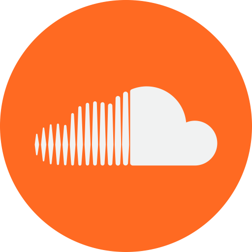

I've been learning about and practicing music since around late 2015, however I only released my first original song (Fight or Flight) in early 2016. Since then I've tried to improve as much as I possibly can and release songs more frequently.
Although I only released 13 songs or so from 2016 to 2018, starting with 2019 I'm doing my best to release at least one original song each month.
Currently, I make all of my music digitally in FL Studio 11 with various VSTs/plugins (some of which are listed below), though I plan to upgrade to FL 20 in the near future.
I don't exactly have a specific genre that I try to aim for — usually I'll just make something that I think sounds good and figure out what genre to put it in at a later time.
If you'd like to tell/ask me anything, you can email me at seth@sethgibbs.xyz, contact me on Bandcamp, or message me on SoundCloud. I'll try to answer or get back to you as soon as I can!